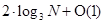
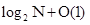
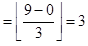
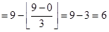
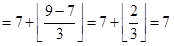
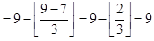
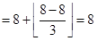
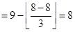

Searching Algorithms
Ternary Search
Η τριαδική αναζήτηση είναι μία γενίκευση της δυαδικής, με την έννοια ότι αντί για ένα ενδιάμεσο σημείο χρησιμοποιούμε δύο, χωρίζοντας το σύνολο σε τρία υποσύλονα. Σε κάθε επανάληψη γίνονται δύο συγκρίσεις αποφασίζοντας σε ποιο τρίτο του συνόλου θα συνεχίσει την εκτέλεση ο αλγόριθμος. Η λίστα των στοιχείων πρέπει να είναι ταξινομημένη είτε κατά αύξουσα είτε κατά φθίνουσα σειρά.
Η τριαδική αναζήτηση ανήκει στην κατηγορία διαίρει και βασίλευε και μπορεί πολύ εύκολα να γενικευτεί σε κ-αδική αναζήτηση χωρίζοντας το σύνολο σε κ υποσύνολα. Η πολυπλοκότητα είναι λογαριθμική και ανάλογη προς το μέγεθος της εισόδου με βάση του λογαρίθμου το κ. Στη συγκεκριμένη περίπτωση παρόλο που σε κάθε επανάληψη απορρίπτονται τα δύο τρίτα της λίστας, η τριαδική αναζήτηση δεν είναι πιο αποδοτική από τη δυαδική. Αυτό συμβαίνει διότι σε κάθε βήμα γίνονται δύο συγκρίσεις έναντι μίας στη δυαδική με αποτέλεσμα  συγκρίσεις οι οποίες είναι περισσότερες από τις  .
Pseudocode
2.
3.
4.
5.
6.
7.
8.
9.
10.
11.
12.
13.
14.
15.
16.
17.
18.
19.
20.
21.end
Applet
Example
Έστω ο πίνακας A=[1 2 3 4 5 6 7 8 9 10], και value=9 το ζητούμενο στοιχείο. Υπολογίζουμε τα left και right με τιμές 0 και 9 αντίχτοιχα. Επειδή 0 ≤ 9 εκτελούνται οι εντολές του βρόχου while.
leftThird  , rightThird Υπολογίζουμε τα Α[leftThird] και Α[rightThird] και εξετάζουμε αν ισχύει κάποια από τις συνθήκες ελέγχου if.
A[3]=4, 4≠9
A[6]=7, 7≠9
A[3]=4, 4≤9
A[6]=7, 7<9, left=7
Παρατηρούμε ότι ισχύει η 4η συνθήκη και υπολογίζουμε τη νέα τιμή του left. Η συνθήκη left ≤ right είναι αληθής (7 ≤ 9) και επαναλαμβάνεται η προηγούμενη διαδικασία δίνοντας τα παρακάτω αποτελέσματα.
leftThird , rightThird A[7]=8, 8≠9
A[9]=10, 10≠9
A[7]=8, 8<=9
A[9]=10, 10>=9
left=8, right=8
Αυτή τη φορά δεν ικανοποιήθηκε καμία από τις συνθήκες ελέγχου με αποτέλεσμα να αλλάξουν τιμή και οι δύο μεταβλητές. Οι εντολές του βρόχου while θα εκτελεστούν για μία ακόμη φορά (8 ≤ 8) και θα καταλήξουμε στο επιθυμητό αποτέλεσμα.
leftThird , rightThird A[8]=9, 9=9